長九郎稲荷/千葉県
銚子の外川をウロウロしていたらこんな強烈な看板を発見。
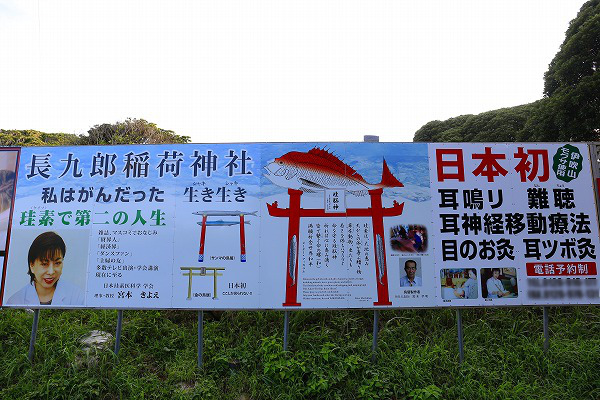
うへえ。何だこりゃ？
鳥居の上に鯛が乗っているじゃないか。
気になるのは鳥居だけじゃない。
「私はがんだった」という告白。
え、だれだれ？
何か有名な人らしいのだが、この神社との関係が判らないし、がんだったの続きも判らない。で、治ったの？
調べてみると漢方や薬膳方面でご活躍な方のようだが、当サイト的にはフィギュア供養でお馴染みの秋葉原神社のサポートをされている方として記憶に留めておきたい。
さらに珪素への賛辞が続く。
珪素って要はシリコンですよね？シリコンを信仰している神社な訳ですか？チョット判らないです…。
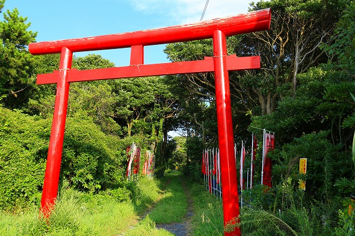
まあ、とにかく行ってみよう。
それらしき道を進んでいくと…
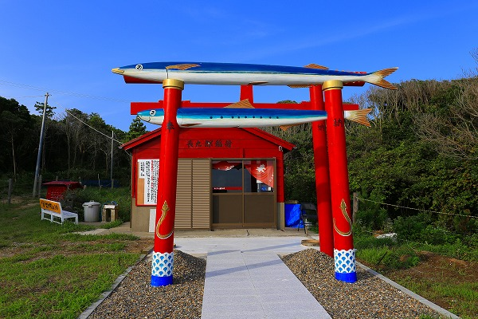
鯛じゃなくてサンマの鳥居でした…
サンマの下にはイワシ、かな？
年間の水揚げ量が日本一の銚子というお土地柄らしい何とも目出度い鳥居である。
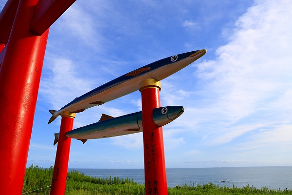
目の前が海、という素晴らしいロケーションに建つお魚鳥居。
ギョギョギョでギョざいます。
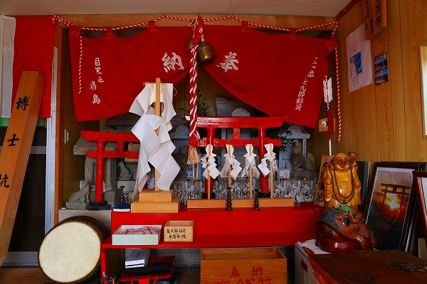
仮設っぽい社殿の中に入ってみる。
そこにはお稲荷さんが祀られていた。
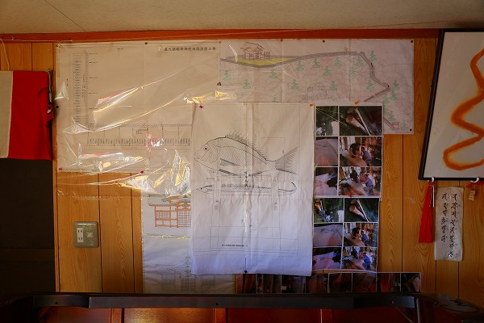
神社の完成図的なモノが貼ってあった。
それによると高台にあるこの場所まで海沿いから参道を通すようだ。
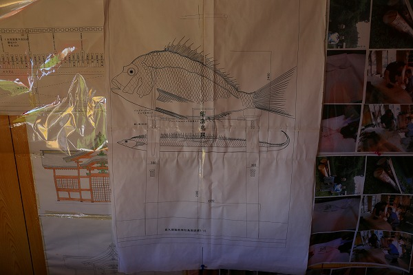
そして最大の目玉として鯛の鳥居を建立する予定なのだ。
ホントにこんな鳥居が出来るのだろうか？
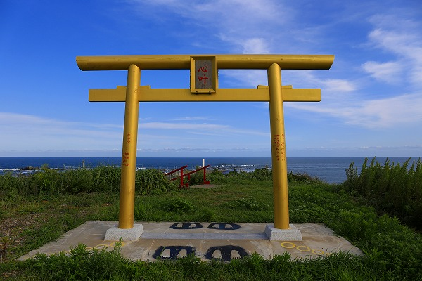
敷地内には金色の鳥居もあった。
何だかいちいちエキセントリックな感じ、嫌いじゃないです。
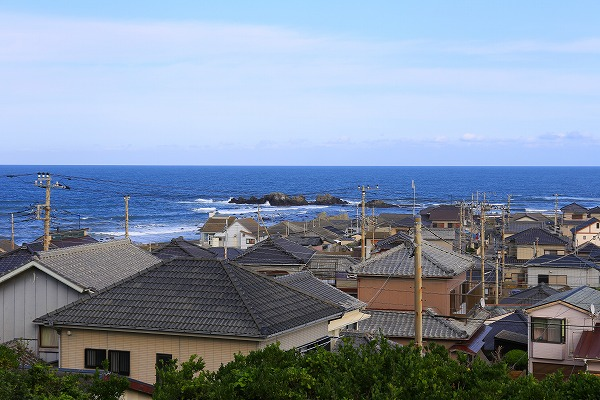
眼下には外川の港町。
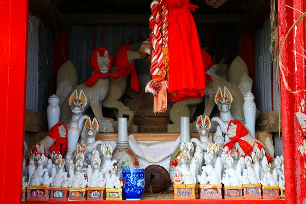
社殿の傍らにはたくさんのキツネが並んでいる。
そういえばさっき新社殿の図面もあったなあ。
これから増々珍奇な神社になっていくような期待がもてますな！
…というわけでその数か月後。
どうなったか確認するために再び訪れてみた。
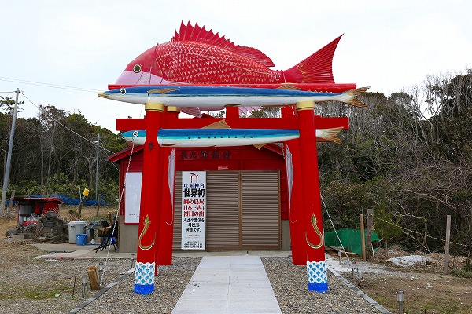
おおお、立派な鯛の鳥居が出来上がっているではないか。
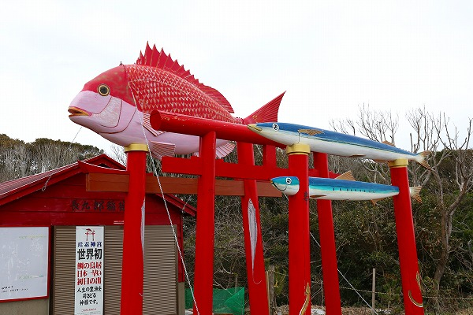
鯛、サンマ、イワシの揃い踏み、である。
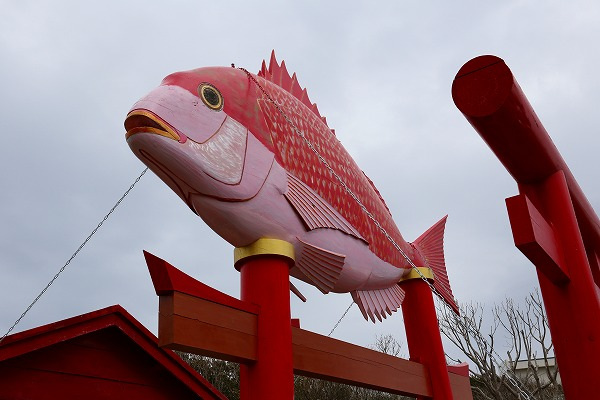
鯛の部分は鎖で補強されている。
やっぱり海に面した高台だから強い風には耐えきれないかもしれない、という判断なのだろう。
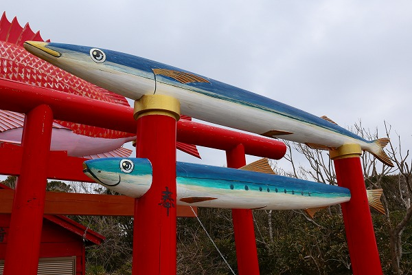
サンマ、イワシの鳥居も健在。潤んだ瞳がキュートですね。
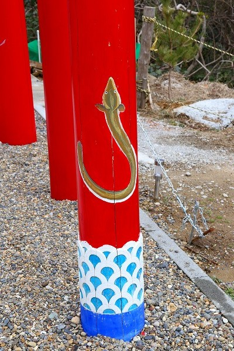
足元にはアナゴ。これもまた銚子の名物なり。
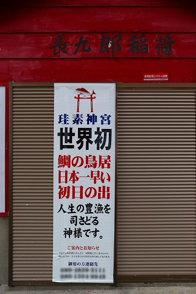
長九郎稲荷、というのがここの正式な呼称のようだ。
一方で珪素神宮という呼称も採用されている。
このように呼称が複数ある辺りも珍寺っぽくてイイですねー。
この長九郎稲荷、外川の歴史を記した本の中に記述があった。
いわく、長九郎稲荷は古くから地元の人々に信仰されている神様だったという。
…今から350年前、紀州から来た長九郎という漁師が豊漁と子孫繁栄を願い伏見稲荷を勧請して開いたのが始まりだという。
その後、長九郎が訛化して「ちょぼくり稲荷」と呼ばれるようになり、地元の人々の信仰を集めた、って。
珪素だ、鯛の鳥居だ、と奇天烈なワードばかりが目立つ神社だが思いつきで作られた神社じゃないんだね。
ちなみにこの長九郎という人、外川を開いた崎山治郎右衛門と一緒に紀州からやってきたという。
崎山治郎右衛門に関しては説明すると長くなるので、興味ある方はご自身でググって下さい。
あるいは外川ミニ郷土資料館に行くと名物館長さんがたっぷり説明してくれます。ここはお薦めです。
さてさて、話を戻しますよ。
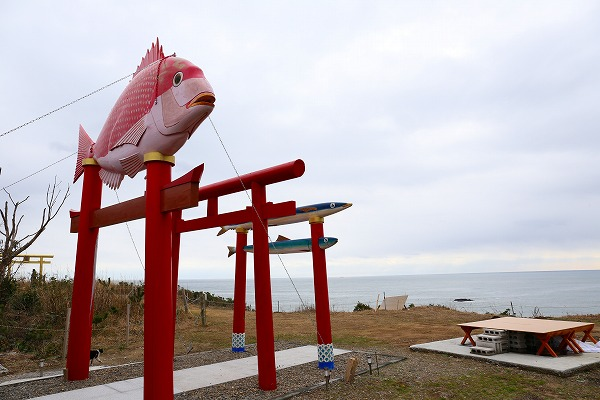
鳥居の向こうには太平洋が見える。
この日は曇天だったので見えないが、天気が良ければアメリカ西海岸が見えるはず（嘘）。
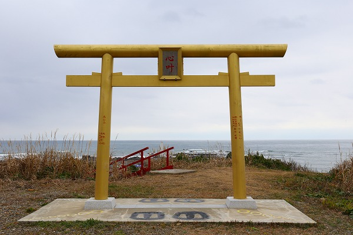
金ピカの鳥居も健在だった。
後は本殿の完成を待つのみ！という状況で期待が広がる長九郎稲荷だった。
それから5年。
久し振りに銚子に行ったので様子を見にいってみたよ。
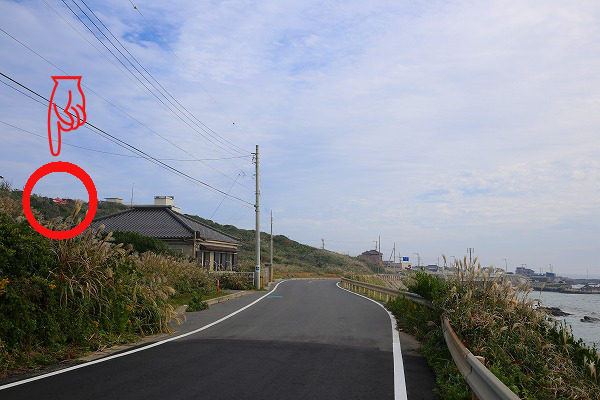
海沿いの道を走っていると丘の上に鯛の鳥居が見えてきた。嗚呼、懐かしや。
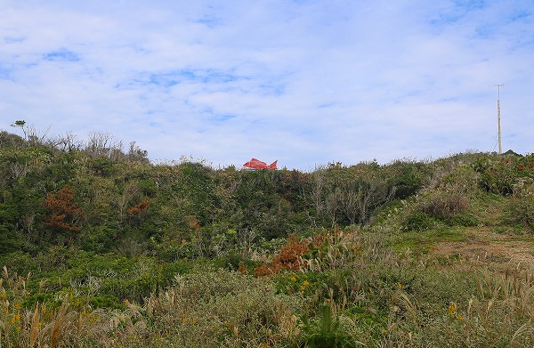
海沿いから見るとまるで緑の大海原を鯛が泳いでいるかのようだ。
きっと社殿も完成して素晴らしい珍神社になっていることであろうよ。
で、長九郎稲荷に到着。
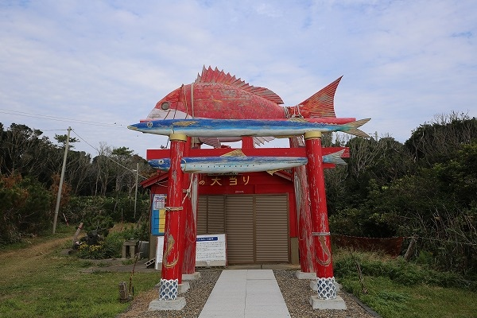
あららら、本殿は出来てないんだ。
それ以上に鯛やサンマの鳥居の劣化が激しすぎ！
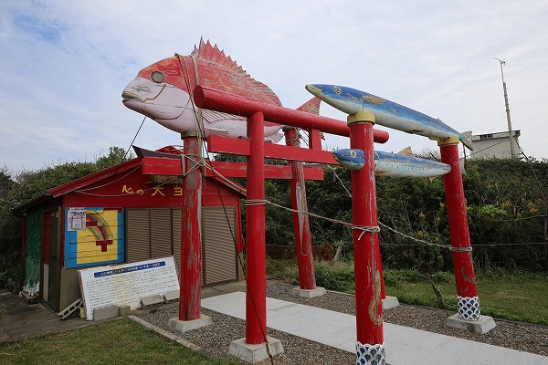
潮風が当たる場所である事を差し引いても5年足らずでこんな傷みます？
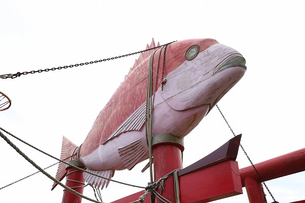
鯛の目が死んだ魚の目に…。
しかも鎖だけでは構造的には耐えられなかったのだろうか、ロープで更に縛り付けられている。
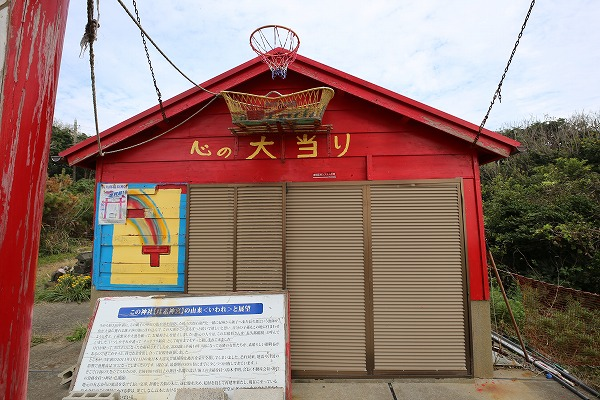
社殿は新しくなるどころかバスケのゴールが付いており、何だか荒んだ感じで痛々しい。
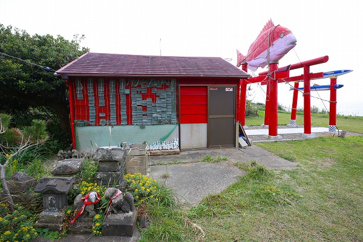
かつては狐が納められていた小祠もなくなってしまい、社殿の脇に野ざらしで置かれていた。
説明書きにはこの神社を再興した人が社殿をはじめ様々な境内整備を行うようなことが書かれていたが、どうやら尻すぼみになってしまったようだ。
まあ、薄々そんな予感はしていたんですけどね…。
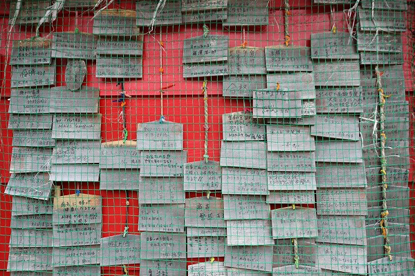
唯一5年前から増えたアイテムといえばこの絵馬ぐらいだろうか。
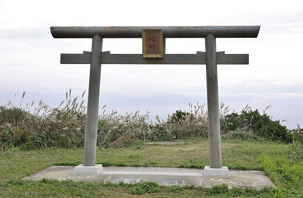
金色の鳥居も塗装が剥がれてしまい、普通の鳥居になっていた。
諸行無常、ですなー。
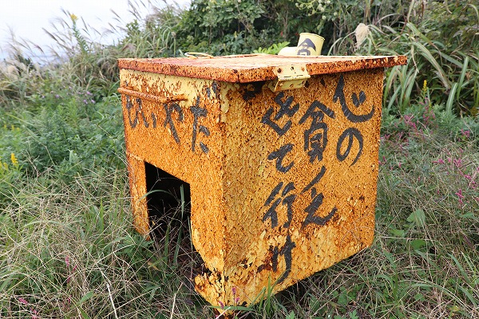
境内の片隅にあった鉄の箱。
「心の貧乏出ていけ」
そしてそのとなりには
もういやだ
何か全てを言い表しているような気がしてならないっすね…。
2014.09. 2015.01. 2020.11.
珍寺大道場 HOME